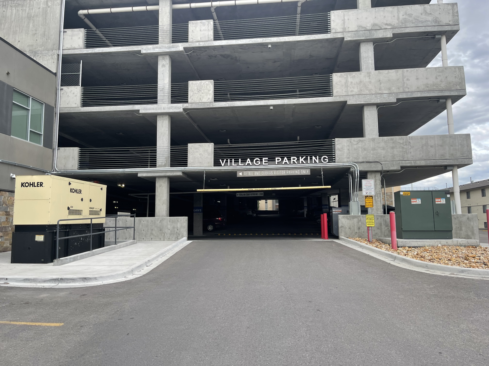
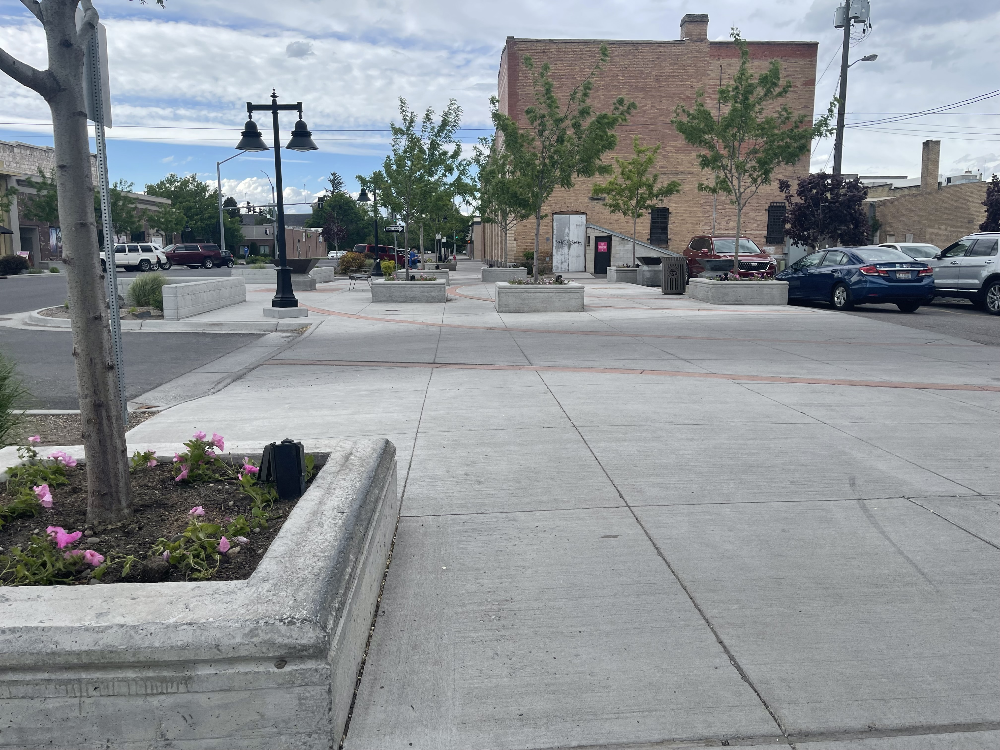
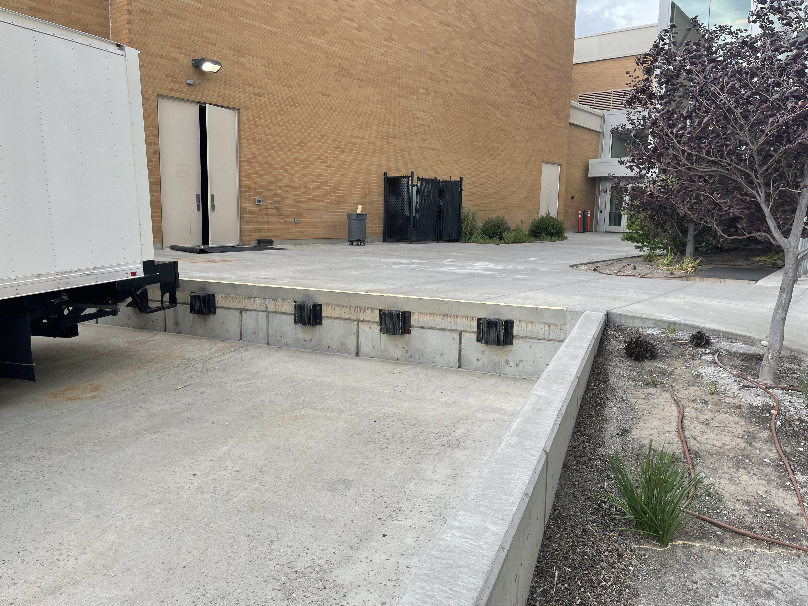
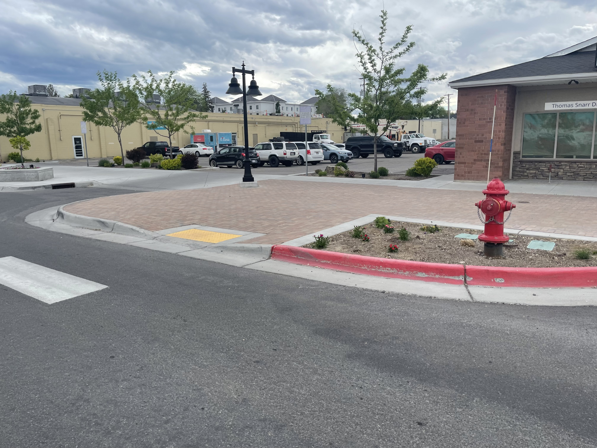
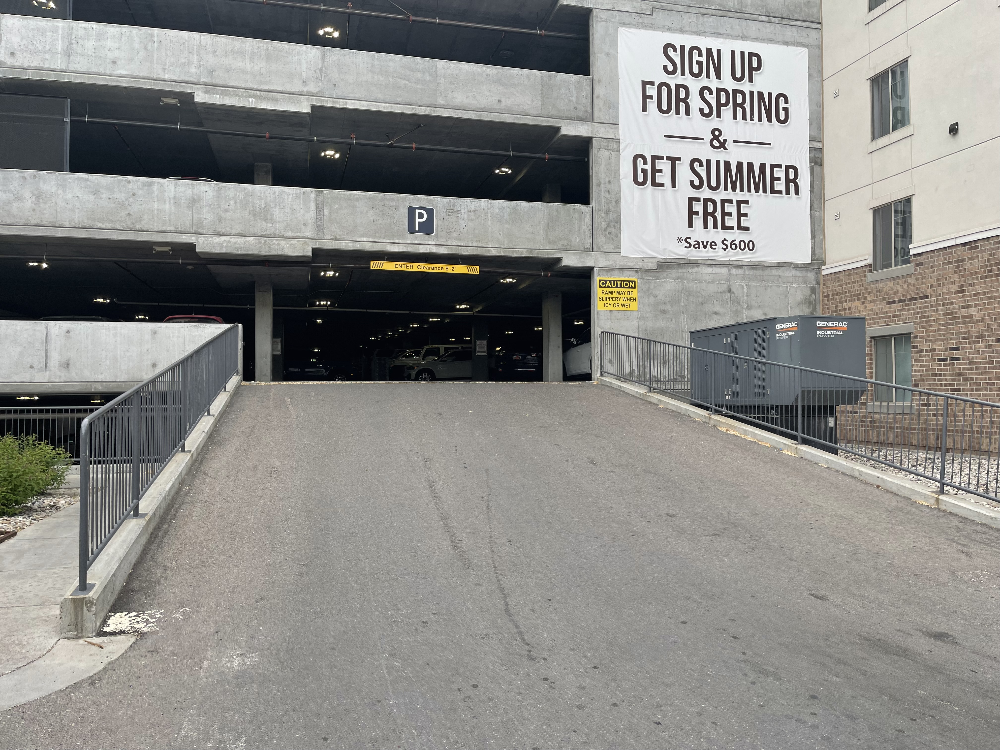
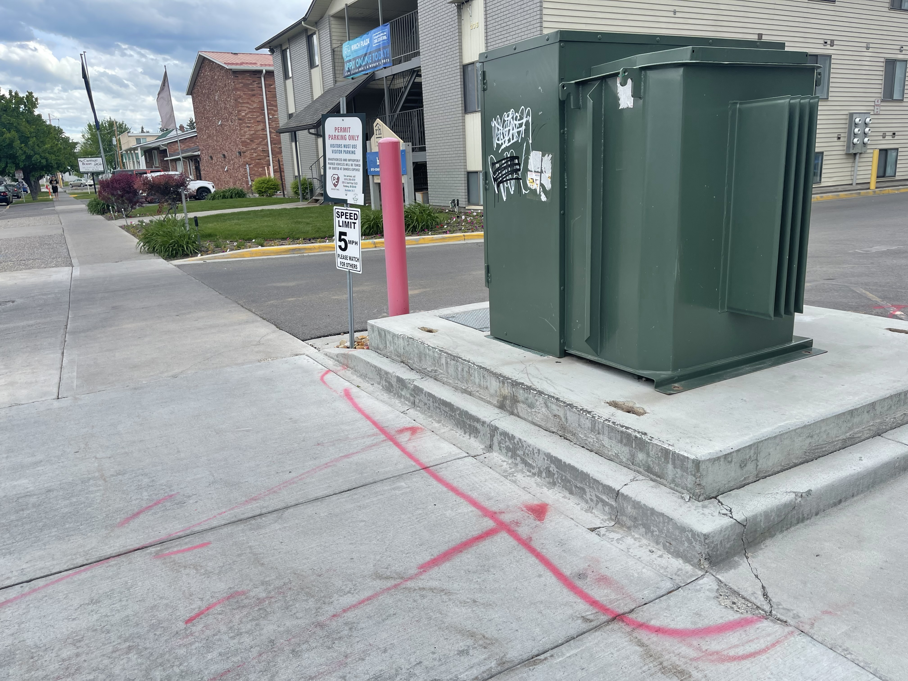
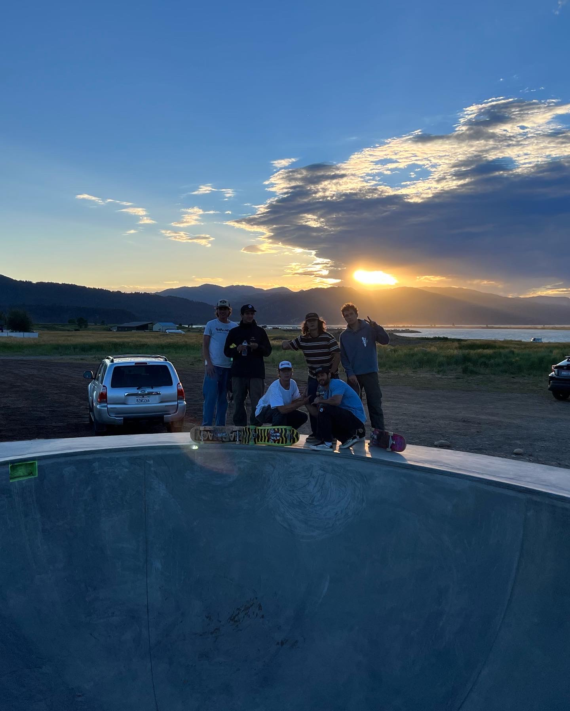

Cedars Parking Garage
This is a pretty mellow parking garage hill bomb. Unfortunatly the elevator is inside so you have to walk up it if its late or the doors are locked, but its pretty nice. It alternates between somewhat steep and pretty flat so you can hit some ticks on your way down. It is the Cedarpoint parking garage.
Paramount Theater Ledge 
This ledge is pretty buttery compared to some of the other local ledges. Bring some wax just incase because it is always nice to be able to make it slide a little better. It is located right in front of the Paramont movie theaters. It has two ledges that are already waxed, but plenty of ledges that could be waxed and be set up for some awesome ledge lines.
Campus Drop 
This drop off spot is located right nex to the I-Center and the heart building on BYU-I campus. It is a pretty small drop, has really nice concrete, and is not too busy. This makes it perfect for learning how to take your tricks down things without being too worried about hurting yourself. It is also a perfect spot for learning how to start taking those same tricks down 3-4 stair flights.
Paramount Mannypad 
This is a little manny pad outside of the Paramount theaters. It is a little tought to hit because of the brick, but it makes that amazing skateboard on brick noise making it perfect for some nice manual clips.
Northpoint Garage/Hillbomb 
The Northpoint parking garage is the best parking garage in Rexburg. There is a very convienent elevator so you can hit it as many times and not have to walk up. After about 4-5pm the Managment is not around anymore and you don't have to worry about being kicked out. It is a very steady decline so you never end up going super fast making it perfect to get a line of your favorite tricks while going down. The concrete is very smooth and perfect for try out some back and frontside powerslides.
Cedars Legde 
This ledge is pretty small making it a nice one to be your first street ledge or if you just need a 15-20 minute break from homework. The location makes it very easy to get to from a lot of the apartments near campus. It has not been skated too much so the ledge is still in pretty good shape with out a lot of chips making it feel and slide a lot like a skate park ledge. The only hard part about this ledge is the giant green electrical unit and sign post right in next to it.
Kiwi Loco Ledge

This ledge is located right between the in and out car paths to the pines. The ledge it fairly tall and has been skated a lot making it pretty crusty, but still a great option when trying to take your ledge tricks to the next level.
Campus hip

This ledge is located right between the in and out car paths to the pines. The ledge it fairly tall and has been skated a lot making it pretty crusty, but still a great option when trying to take your ledge tricks to the next level.
Driggs Bowl 
Best bowl in Idaho. It is not in Rexbur rather it is a two hour drive away, but if you are a bowl skater it is a must day trip. The drive out is super pretty and the bowl is fun to skate.